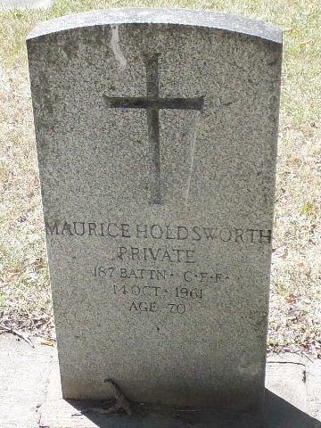

Elin Alfrida Holdsworth f Karlsson.

Född 14 jun 1896 i Filipsdal, Gobo, Yxnerum (E) 3 .
Död 19 nov 1975 i Camrose, Alberta, Kanada 4 .
|
Född
2 okt 1891
i Simcoe, Ontario, Kanada
1
.
Död 14 okt 1961 i Edmonton, Alberta, Kanada 1 . |
|
Jarvis Morris Holdsworth
Född 2 okt 1891 i Simcoe, Ontario, Kanada 1 . Död 14 okt 1961 i Edmonton, Alberta, Kanada 1 . |
|||

Jarvis Morris Holdsworths grav
|
Gift
1928
i Edmonton, Alberta, Kanada
2
.
Elin Alfrida Holdsworth f Karlsson.
Född 14 jun 1896 i Filipsdal, Gobo, Yxnerum (E) 3 . Död 19 nov 1975 i Camrose, Alberta, Kanada 4 . |
Framställd 12 aug 2026 med hjälp av Disgen version 2025.